项目一、典型数控机床数控系统配置、操作及维修技术
一、 FANUC新一代数控系统特点及内部组成
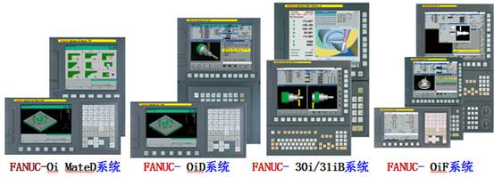 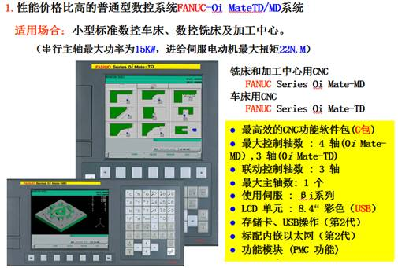 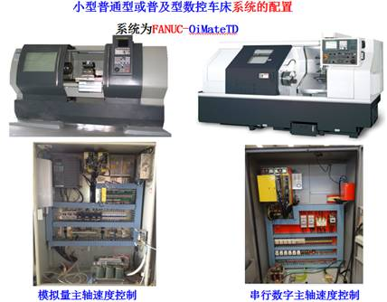 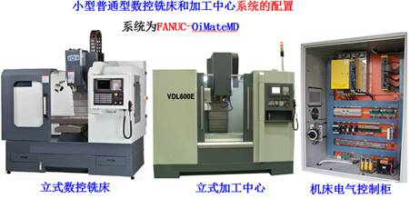 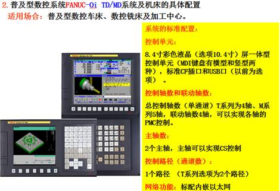 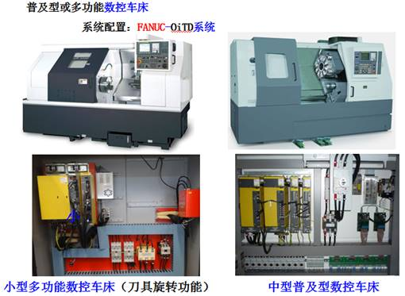 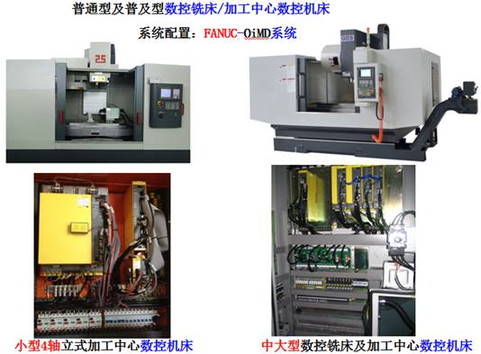
二、FANUC-OiD/OiMateD系统组成及其功能
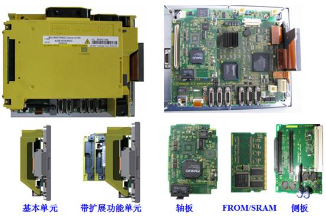1、FANUC-OiD/OiMateD系统内部组成
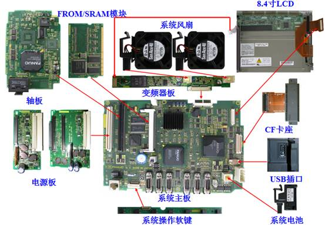FANUC-OiD/OiMateD系统内部组成
2、FANUC-OiD/OiMateD系统内部功能框图
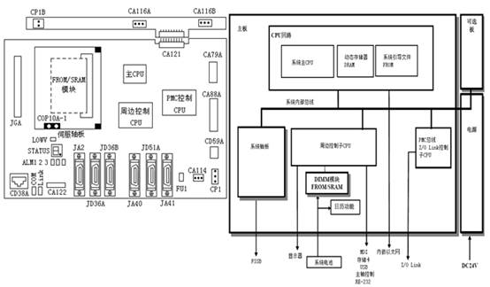1）系统轴板
伺服轴板集成了伺服控制的DSP（每个DSP控制两个轴）、伺服控制的FROM、伺服工作DRAM及伺服总线控制电路等。伺服轴板有A1（1路径2轴）、A2（1路径4轴）、B1（2路径6轴）及B2（2路径8轴）四种配置。
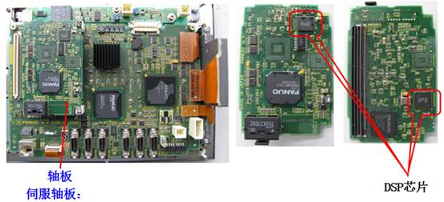（2）FROM/SRAM板
闪存FROM：装载了系统文件（系统管理及控制软件）及机床厂家文件（PMC程序和宏管理文件）
静态SRAM：存储了系统CNC参数、PMC参数、加工程序及各种补偿值等（靠系统电池保存）。
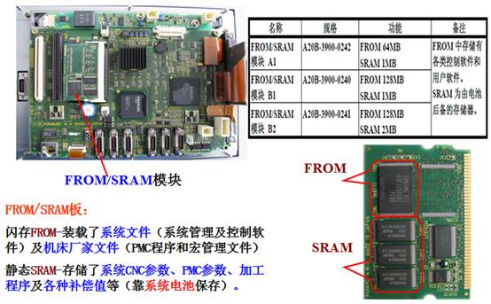
（3）系统主板
主板集成了系统主CPU控制电路、子CPU控制电路（周边控制CPU和PMC控制CPU）、系统显示控制电路、主轴控制(模拟量和数字)电路、MDI键盘信号控制电路、I/O Link总线控制、编码器/高速跳转信号控制电路、RS-232C通信控制电路、存储卡1/F控制电路、标准嵌入式以太网及USB控制电路等。
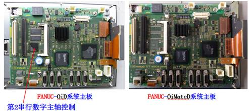 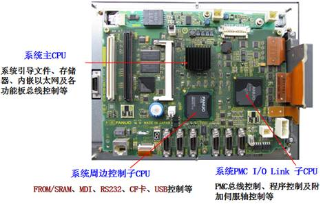（4）系统侧板（系统电源及扩展功能插槽板）
外部DC24V直流稳压电源通过系统的主板插口CP1及熔断器FUSE1（5A）到系统侧板的电源板，再经过系统电源板的滤波、调整及稳压输出DC+5V、3.3V 及2.5V各种直流电源，来满足系统的需要。
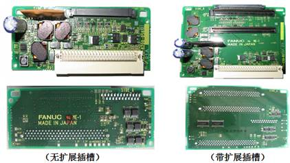（5）系统灯管及风扇控制板（变频器板）
FANUC-OiD/OiMateD系统背景灯和风扇控制板是为系统背景灯管提供高压电源及系统风扇（两个）提供直流24V电源。系统背景灯和风扇控制板通过系统主板的插头CA121于系统主板连接。
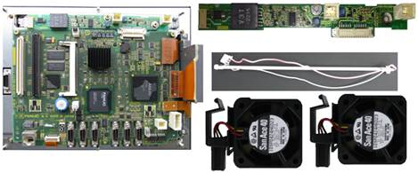（6）系统操作软键控制板
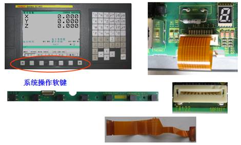（7）系统显示装置（LCD）
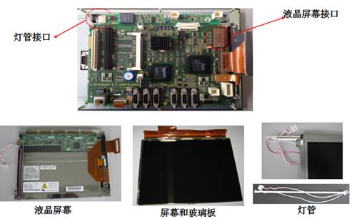三、系统功能接口及连接
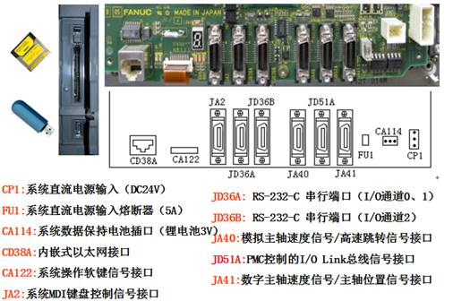 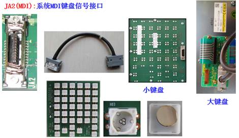 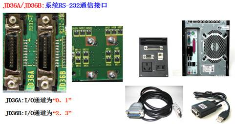 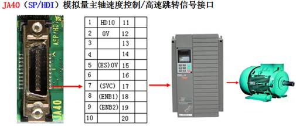 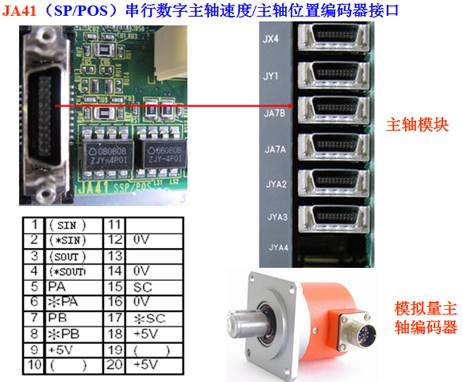 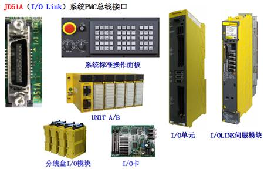四、 FANUC-OiD/OiMateD数控系统功能键菜单及维修相关操作
FANUC-OiD/OiMateD系统MDI键盘标准配置为标准键盘（小键盘），也可以采用全键盘（大键盘）。
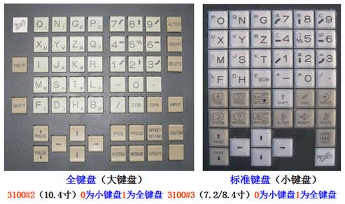1.系统功能键及操作菜单
POS:位置键 PROG:程序键 OFS/SET:刀补/设定键
SYSTEM：系统键 MESSAGE:信息键 CSTM/GRPH：用户/图形键
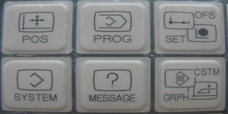1）位置功能键POS
通过位置功能键分别显示绝对坐标、相对坐标、综合坐标、手摇中断及监视画面
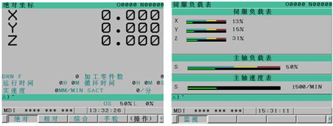系统操作监控画面显示参数的设定：系统参数3111#5设定为“1”
进给伺服电动机出厂时极限值标准设定为：120%
主轴电动机出厂时极限值为：150%
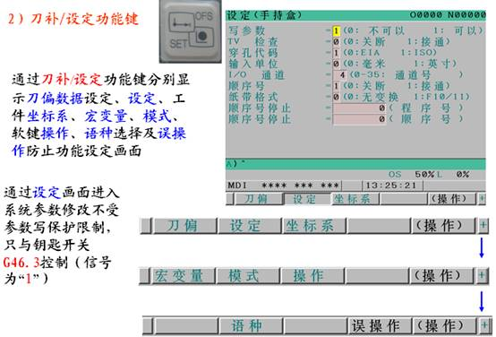 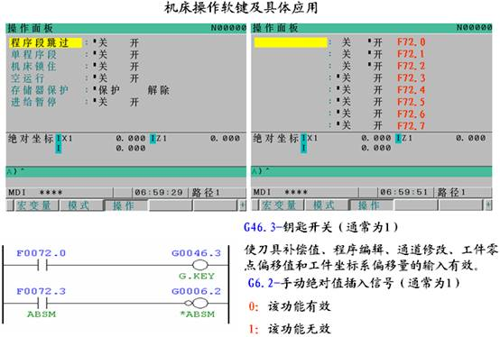 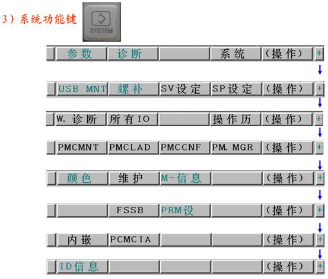 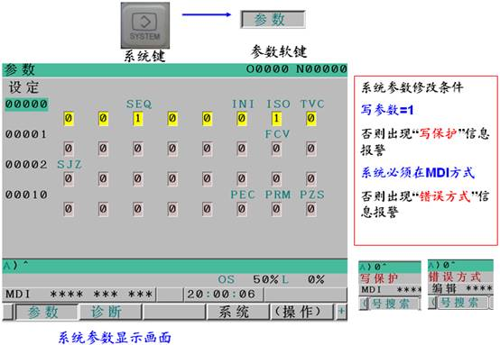 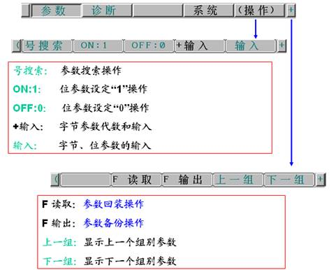 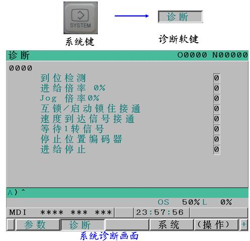 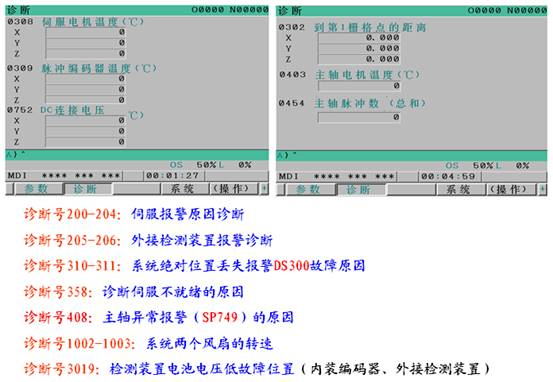 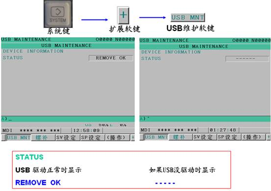 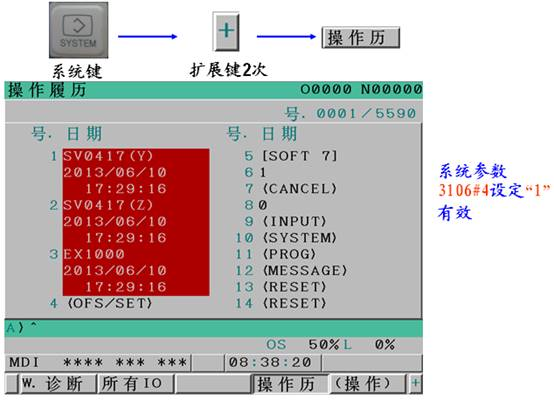 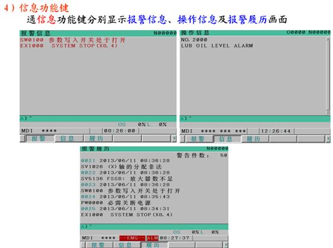 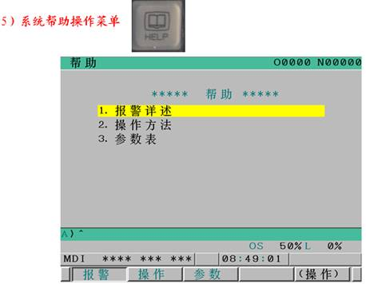 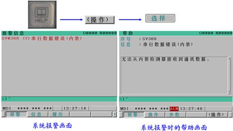 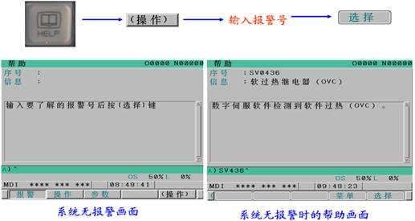
2.系统维修相关参数设定及具体操作
（1）系统全清操作
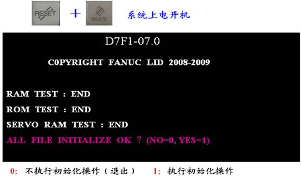 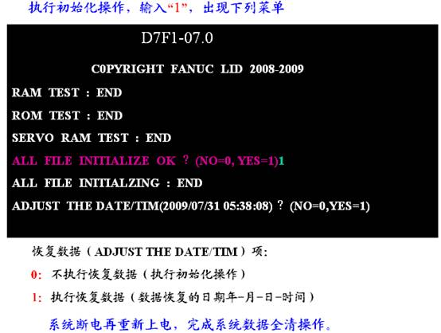
系统全清过程：
是把系统静态存储器SRAM所有数据全部格式化，而闪存FROM文件保留。 SARM数据项目： 系统参数、PMC参数、宏程序、加工程序、刀偏数据、各种补偿数据及工件坐标系等数据。
（2）系统语言显示参数
OFS/SET功能键→SET软键→+扩展键→扩展键→LANG FANUC-OiD系统：系统通过设定菜单中选择繁体汉化和简体汉化 ※ CNC 可动态切换显示语言系统参数 3280#0=0（1无效）
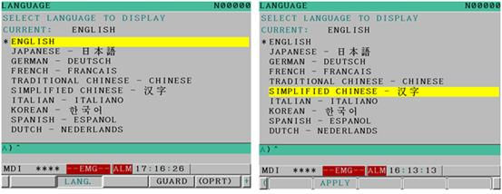统参数修改保护
FANUC-OiC/OiD系统：
数 保护 （PWE）=1
实现系统参数写保护，即（PWE）=0
FANUC-OiD系统参数3299#0设定为“1”
统参数保护,在设定菜单中对参数3299#0设定为“0”）
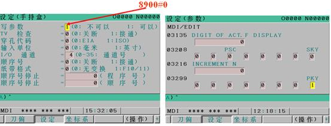统MDI键盘功能键SYSTEM无效的设定
FANUC-D系统参数3208#0设定为“1”
变有效，即3208#0设定为“0” ，必须在设定菜单中的参数修改）
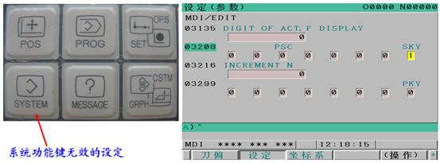统PMC不能显示相关参数
PMC显示参数为：K900.0，设定为“0”显示梯形图，设定为“1”不显示梯形图
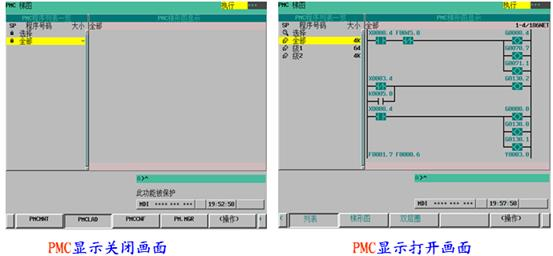 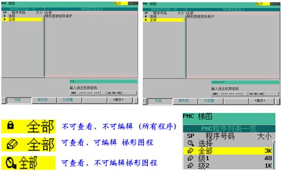 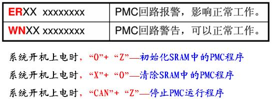 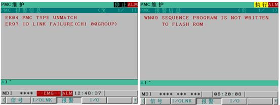 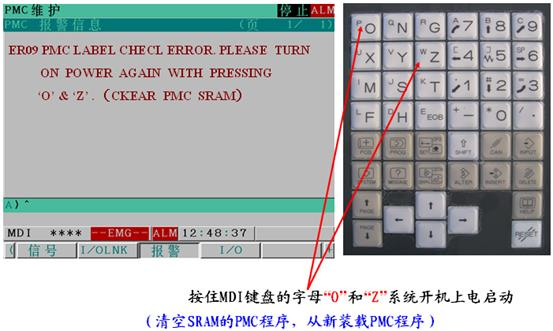（7）机床厂家宏程序O9XXX程序保护
五、 系统常见报警诊断案例分析

态存储器SRAM数据错误报警SYS_ALM500
故障报警检测机理：
系统开机从静态存储器SRAM装载数据到动态存储器DRAM时，出现数据传输错误报警。
故障产生可能原因：
1）SRAM数据格式错误或数据文件不良
2）SRAM区域文件空或没有格式化
3）SRAM本身硬件故障或接触不良
4）系统受到干扰或系统电池电压低
故障诊断及实际处理方法：
1）系统开机全清SRAM（RESET+DELETE）故障黑屏消失，则为原因中的前两种，重新装载备份数据即可。
2）如果全清后故障依旧黑屏报警，则为故障原因3，拆开系统检查FROM/SRAM模块接触是否良好或更换模块。
3）更换系统电池并检查及排除干扰因素
4）系统轴板或主板不良故障
3. 伺服总线系统报警SYS_ALM120
故障报警检测机理：
系统开机时，系统轴板与伺服驱动器通信异常。
故障产生可能原因：
1）系统轴板内部故障
2）伺服驱动器内部故障
故障诊断及实际处理方法：
拔掉系统与驱动器光缆，系统重新开机
1）如果系统报警不消失，则为系统轴板故障或系统主板故障
2）如果系统报警消失，出现伺服其他报警如SV5136时，则为伺服放大器、连接光缆故障。
4. 系统PMC总线（ I/O LinK）报警SYS_ALM197
故障报警检测机理：
系统开机时，系统主板与I/O装置通信异常。
故障产生可能原因：
1）系统主板内部故障
2）I/O装置及I/O Link电缆故障
故障诊断及实际处理方法：
拔掉系统与I/O装置的电缆，系统重新开机
1）如果系统报警不消失，则为系统主板故障
2）如果系统报警消失，出现PMC其他报警如ER97时，则为I/O装置及连接电缆故障。